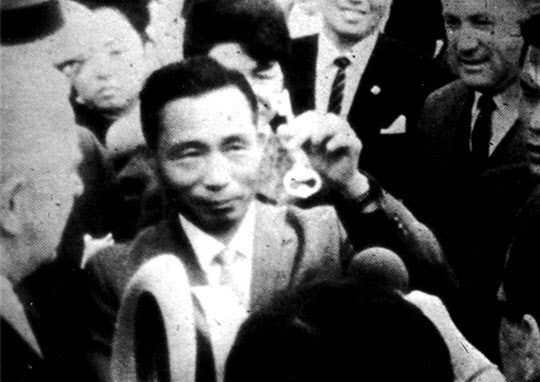
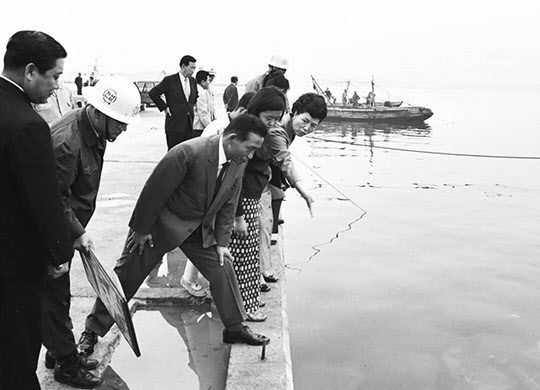
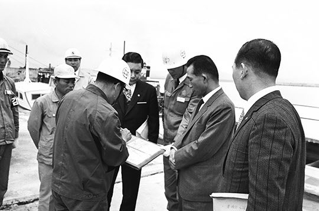

보도일 2014-10-14출처 조선일보 프리미엄조선 연재
1965년 5월 초순, 박정희는 미국 존슨 대통령의 초청을 받아 방미 장도에 오를 준비를 하고 있었다. 그 무렵의 어느 날, 대한중석 경영 혁신에 몰두하고 있는 박태준이 박정희의 호출을 받았다. 대통령과 대한중석 사장의 독대.
“이번 미국 방문에 피츠버그는 종합제철 때문에 가는 거야.”
“예. 구체적인 성과가 나오지 않겠습니까?”
“우리에겐 종합제철이 절대적 급선무야.”
박태준은 반응을 내지 않았다. 연산 조강 30만 톤의 울산종합제철소가 무산된 경과를 누구보다 잘 알고 있는 처지에 맞장구를 친다고 해서 위로가 될 것도 아니라고 생각했다.
“전후 일본에서 제철소를 가장 잘 지은 사람이 누군지 알고 있나?”
“가와사키제철소가 단연 최고인데, 니시야마 야타로 사장의 집념이 가와사키를 만들었다고 들었습니다. 특히 그분은 IBRD 차관을 도입해서 일본에다 세계 최초로 임해(臨海) 종합제철소를 건설한 인물입니다.”
“입지 선정이나 기술적으로 배울 게 많겠군.”
“물론입니다. 우리도 제철의 원료가 없으니 일본과 비슷한 조건입니다.”
1964년 박정희의 특사로 일본에 나가 있던 열 달 동안 제철소도 열심히 살폈던 박태준의 대답에는 막힘이 없었다.
“니시야마 사장을 여기로 불러올 수 없겠나?”
“그건 어렵지 않을 겁니다.”
대통령과 대한중석 사장이 마치 종합제철소 건설의 간절한 꿈을 실현하기 위해 일차적으로 역할을 분담한 것처럼, 박정희는 방미 일정 중에 펜실베이니아주 피츠버그시 철강공업단지를 둘러본 뒤 미국 철강업계 인사들과 만나고, 박태준은 일본으로 날아가 가와사키제철소 니시야마 야타로 사장과 만난다.

일본은 패전 후 조강 생산 능력이 연산 200만 톤까지 떨어졌다가 1950년에 500만 톤 수준으로 회복했다. 이때 철강 강국은 미국, 소련, 독일, 프랑스, 영국 순이었다. 일본은 영국의 30%에 미달하는 수준에서 세계 6위를 기록했다. 아직 중국엔 대규모 종합제철소가 없었다. 6‧25전쟁 때 중국이 무기를 제조할 능력이 저조하다고 보았던 맥아더 장군의 판단은 조강 능력 하나만 들이대도 적중한 것이었다.
6‧25전쟁이라는 한반도의 비극을 오히려 ‘아주 특별히 좋은 경제적 호황’으로 누리며 전후 경제 발전의 가속 페달을 밟을 수 있었던 일본은 1960년에 연산 조강 2200만 톤을 돌파하여 미국, 소련, 독일, 영국에 이은 세계 5위에 진입하고, 1964년엔 연산 조강 3900만 톤 규모에 이르러 독일을 제치고 세계 3위의 철강대국으로 올라섰다. 그해 미국은 1억1500만 톤, 소련은 8500만 톤을 기록했고, 한국은 군소 제철소들의 조강 능력을 다 합쳐도 간신히 연산 20만 톤을 채우는 수준이었으며, 북한은 200만 톤 이상을 생산하여 조강 능력에서 남한보다 10배쯤 우위에 있었다.
휴전 후 십여 년이 지난 1964년을 기준으로 잡을 때, 조강 능력에서 단적으로 드러나듯 한국의 경제력은 북한에 비해 크게 뒤떨어져 있었다. 다만, 한국은 제1차 경제개발5개년계획에 탄력이 붙는 중이었다. 철강수요도 급격히 불어나고 있었다. 1966년의 경우, 국내 조강 능력이 고작 21만 톤이어서 45만 톤이나 수입해야 할 것으로 전망됐다.
1965년 5월 22일 박정희는 아침 일찍 피츠버그의 존스앤드로린 철강회사에 들렀다. 그는 부러운 표정으로 공장 내부를 돌아보았다. 수행원들은 단 하나라도 좋으니 우리도 이런 공장을 가져보았으면 원이 없겠다고 말하기도 했다. 그리고 나흘 뒤(5월 26일)에 박정희는 포이(Foy)와 만난다.(연재 16회 참조)
포이는 코퍼스사(社) 대표이고, 코퍼스는 제철공장 건설에 있어서 기술용역도 해주고 직접 건설도 하는 회사다. 1962년 12월 울산에 연산 30만 톤 규모의 종합제철소를 건설하겠다는 서류에 서명을 했으나 AID(미국국제개발처) 차관 도입에 실패하여 프로젝트를 무산시켰던 장본인이다. 물론 그때 그 책임은 사업적으로나 논리적으로나 포이에게 따지기란 어려운 노릇이었다.
돈을 빌려줄 쪽이 빈곤한 한국정부에게 돈을 빌려줬다가는 십중팔구 떼일 것이라고 판단한 결과였으니, 포이에겐 기껏해야 왜 AID를 설득하지 못했느냐고 푸념이나 해댄다면 몰라도….
어쨌든 박정희와 포이의 그날 그 만남은 한국 산업화 역사, 특히 한국 철강사에서 지울 수 없다. 미국 철강기업인 포이가 한국 대통령 박정희에게 “한국의 종합제철 건설에 차관 공여를 직접 약속드리기는 어렵습니다만 국제차관단을 구성할 수는 있을 것 같으며 그것을 구성하기 위해 적극적으로 협력할 용의는 갖고 있습니다”라고 제안했으며, 이 약속이 1966년 12월에 탄생하는 ‘한국 종합제철 건설을 위한 국제차관단(KISA: Korea International Steel Associates, 對韓國際製鐵借款團)’의 씨앗이 되었던 것이다.

미국 방문을 마치고 귀국한 박정희는 달포쯤 지나 청와대에서 박태준이 초청한 가와사키제철소 니시야마 사장과 환담을 나누고, 대한중석 사장 박태준은 니시야마와 함께 한국에서 종합제철소 입후보지로 거론된 인천, 포항, 울산 등 5개 지역을 둘러본다. 니시야마는 엿새로 짜인 일정을 다 채우지는 못했다. 부산 동래의 온천장에서 묵는 저녁, 고노 이치로라는 절친한 정치인의 갑작스런 서거 소식을 듣고 급히 일본으로 돌아가야 했다.
박정희가 박태준을 청와대로 불렀다. 박태준은 니시야마의 주요 조언들을 챙기고 있었다. 제철소 규모를 100만 톤으로 시작해야 경제성에 유리하다는 것, 원자재를 수입해야 하는 처지에서는 항만시설이 매우 중요하다는 것. 이미 공부해둔 내용이어도 놓칠 수 없는 복습과 같았다. 바로 그 자리에서 박정희가 박태준에게 ‘처음으로, 구체적으로, 명령에 가까운 어조로’ 깊은 속에 가둬뒀던 뜻을 분명히 밝혔다.
“임자가 종합제철소 건설 계획단계부터 참여해서 차질 없이 진행되게 해.”
“황무지를 개간하라고 하시는군요.”
“황무지든 뭐든 개간해야지. 나는 경부고속도로를 직접 감독할 거야. 임자는 종합제철소야! 고속도로가 되고 제철소가 되는 그날에는 우리도 공업국가의 꿈을 실현하게 되는 거야.”
박정희의 ‘비공식적 특명(밀명)’을 받은 박태준의 공식 직함은 국영기업 대한중석 사장일 뿐이었다. 그러나 그것이 두 인물의 관계에서는 변경불가, 취소불능의 신용장과 다름없는 동지적 언약이었다. 때가 무르익으면 박정희는 박태준에게 종합제철소 건설의 공식 직함을 부여할 테지만, 그 자리는 박정희가 박태준에게 종합제철소 건설의 대임을 맡긴 자리였다.
아직은 종합제철소 건설에 대한 공식 직함이 없다는 점, 이는 오히려 박태준에게 유리한 조건이었다. 만성적인 불합리 구조를 과감히 뜯어고쳐서 흑자체계로 돌려놓은 대한중석 경영에 전념하는 가운데 제철과는 한 걸음 비켜선 자리에서 공부하고 견문하면서 제대로 준비할 수 있게 되는 것이다. 물론 박정희도 박태준에게 그러한 배려를 했다.
그날, 박정희의 밀지(密旨) 같은 특명을 받고 청와대를 나와 대한중석 사장실로 돌아온 박태준은 대한중석 부설 금속연료종합연구소 소장을 불렀다. 소장은 상상도 해본 적이 없는 전혀 뜻밖의 지시를 들어야 했다.
“조속한 시일 내에 종합제철소 예비 건설계획을 작성하도록 하고, 매주 진행 상황을 보고하시오.”
